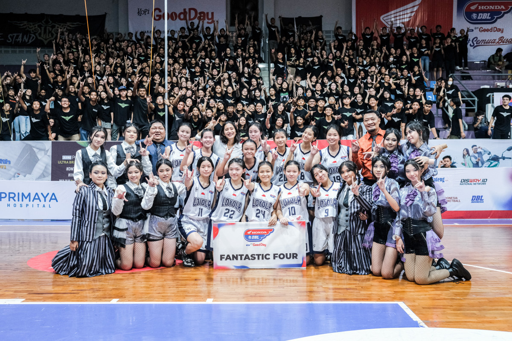

Agu2026
Seni
Juara 1 Lomba Lukis LPSK Jawa Tengah
Kenzo Ebeneezer Yu
Prestasi siswa
Siswa Loyola terus berprestasi di bidang akademik, olahraga, dan seni, dari tingkat provinsi, nasional, sampai panggung internasional.

Sorotan prestasi
Sakka Kosallananda (XI-I) meraih medali perak Olimpiade Sains Nasional (OSN) bidang Informatika. Ia didampingi Bapak Doohan Kristiawan dan dimentori kakak kelasnya, Matthew Hutama Pramana (XII-H).
Tim basket putri Loyola melaju sampai babak Fantastic Four (empat besar) Honda DBL, didukung banyak suporter Loyola yang memenuhi tribun.
Paduan Suara Loyola tampil di Penabur International Choir Festival (PICF) 2024 di Jakarta, festival paduan suara tingkat internasional.
Daftar prestasi
Pilih bidang atau ketik nama siswa dan lomba untuk menyaring daftar.
Kenzo Ebeneezer Yu
Matthew Hutama Pramana (XII-H)
Chloe Jocelyn Santoso (XI-F)
Tim peneliti Loyola
Kalinda Pramesthi Saputra (X-F)
Arthakara Student Company
Eleora Jesse Angelica Francis (XI-B)
Belum ada prestasi yang cocok dengan pencarianmu.
Sumber data: website resmi loyola-smg.sch.id (halaman Prestasi).